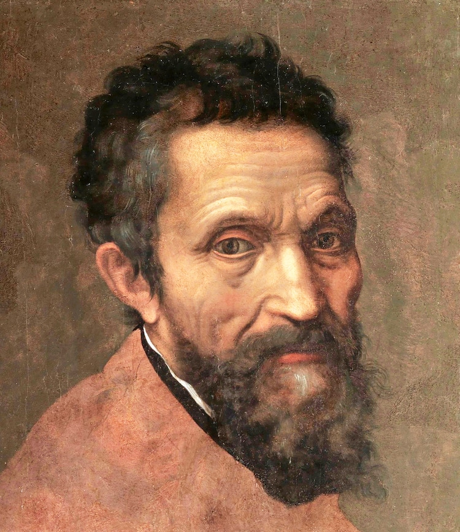
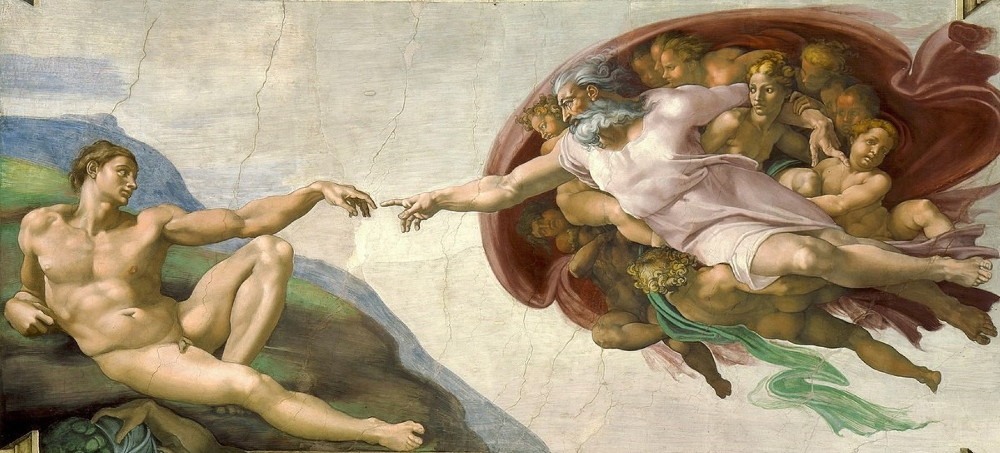
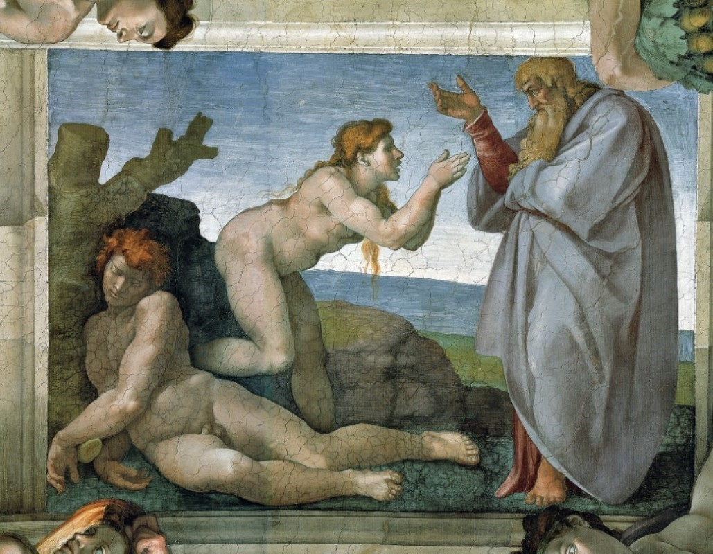
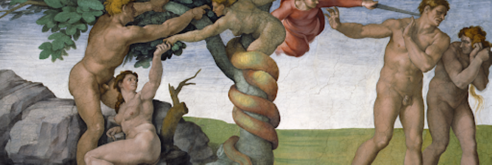
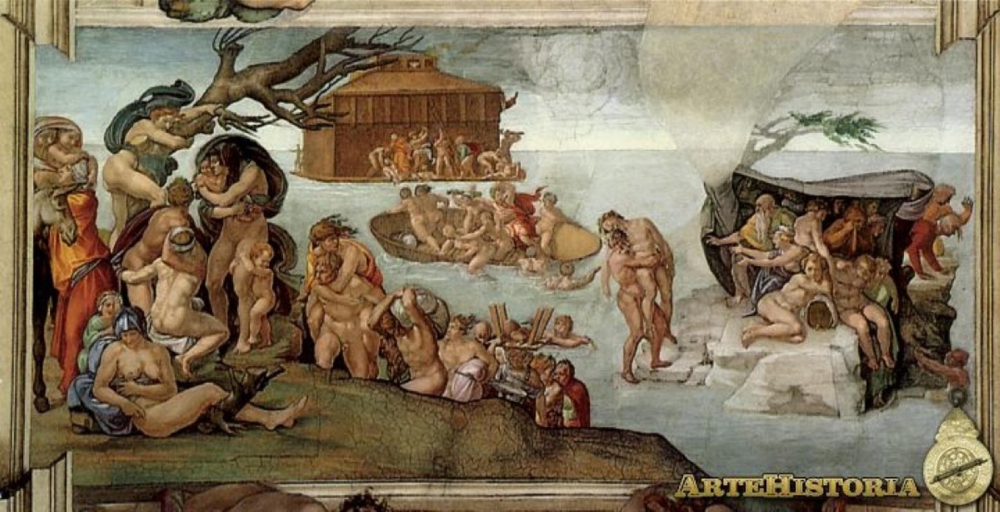
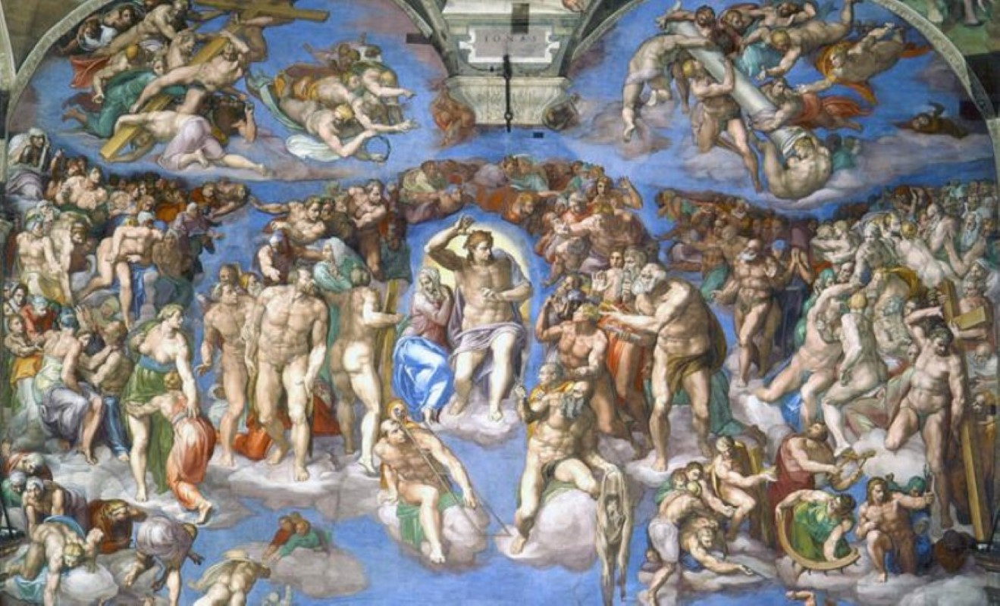

|
(Miguel Ángel Buonarroti, en italiano Michelangelo; Caprese, actual Italia, 1475 - Roma, 1564)
Escultor, pintor y arquitecto italiano. Habitualmente se reconoce a Miguel Ángel como la gran figura del
Renacimiento italiano, un hombre cuya excepcional personalidad artística dominó el panorama creativo del
siglo XVI y cuya figura está en la base de la concepción del artista como un ser excepcional, que rebasa
ampliamente las convenciones ordinarias.
Durante los cerca de setenta años que duró su carrera, Miguel Ángel cultivó por igual la pintura, la escultura y la arquitectura, con resultados extraordinarios en cada una de estas facetas artísticas; en este sentido superó a los otros dos grandes maestros del Cinquecento: Rafael Sanzio, centrado casi exclusivamente en la pintura, y Leonardo da Vinci, tan polifacético y excelso como él pero parco en realizaciones efectivas. Sus coetáneos vieron en las creaciones de Miguel Ángel una cualidad, denominada terribilità, a la que puede atribuirse la grandeza de su genio; dicho término se refiere a aspectos como el vigor físico, la intensidad emocional y el entusiasmo creativo, verdaderas constantes en las obras de este artista que les confieren su grandeza y su personalidad inimitables. La vida de Miguel Ángel transcurrió entre Florencia y Roma, ciudades en las que dejó sus obras maestras. Aprendió pintura en el taller de Domenico Ghirlandaio y escultura en el jardín de los Médici, que habían reunido una excepcional colección de estatuas antiguas. Dio sus primeros pasos haciendo copias de frescos de Giotto o de Masaccio que le sirvieron para definir su estilo. En 1496 se trasladó a Roma, donde realizó dos esculturas que lo proyectaron a la fama: el Baco y la Piedad de San Pedro. Esta última, su obra maestra de los años de juventud, es una escultura de gran belleza y de un acabado impecable que refleja su maestría técnica. Al cabo de cinco años regresó a Florencia, donde recibió diversos encargos, entre ellos el David, el joven desnudo de cuatro metros de altura que representa la belleza perfecta y sintetiza los valores del humanismo renacentista. En 1505, cuando trabajaba en el cartón preparatorio de la Batalla de Cascina (inconclusa) para el Palazzo Vecchio, el papa Julio II lo llamó a Roma para que esculpiera su tumba; Miguel Ángel trabajó en esta obra hasta 1545 y sólo terminó tres estatuas, el Moisés y dos Esclavos; dejó a medias varias estatuas de esclavos que se cuentan en la actualidad entre sus realizaciones más admiradas, ya que permiten apreciar cómo extraía literalmente de los bloques de mármol unas figuras que parecían estar ya contenidas en ellos. Julio II le pidió también que decorase el techo de la Capilla Sixtina, encargo que Miguel Ángel se resistió a aceptar, puesto que se consideraba ante todo un escultor, pero que se convirtió finalmente en su creación más sublime. Alrededor de las escenas centrales, que representan episodios del Génesis, se despliega un conjunto de profetas, sibilas y jóvenes desnudos, en un todo unitario dominado por dos c ualidades esenciales: belleza física y energía dinámica. En 1516 regresó a Florencia para ocuparse de la fachada de San Lorenzo, obra que le dio muchos quebraderos de cabeza y que por último no se realizó; pero el artista proyectó para San Lorenzo dos obras magistrales: la Biblioteca Laurenciana y la capilla Medicea o Sacristía Nueva. Ambas realizaciones son en el aspecto arquitectónico herederas de la obra de Brunelleschi, aunque la singular escalera de acceso a la biblioteca, capaz de crear un particular efecto de monumentalidad en el escaso espacio existente, sólo puede ser obra del genio de Miguel Ángel. La capilla Medicea alberga dos sepulturas que incluyen la estatua del difunto y las figuras magistrales del Día, la Noche, la Aurora y el Crepúsculo. En 1534, Miguel Ángel se estableció definitivamente en Roma, donde realizó el fresco del Juicio Final en la capilla Sixtina y supervisó las obras de la basílica de San Pedro, en la que modificó sustancialmente los planos y diseñó la cúpula, que es obra suya. Su otra gran realización arquitectónica fue la finalización del Palacio Farnesio, comenzado por Antonio da Sangallo el Joven. |
|  La creación de Adán |
Las Pinturas de |
 La creación de Eva |
|  Caída del Hombre, pecado original y expulsión del Paraíso |
 El Diluvio Universal |
 El Juicio Final |